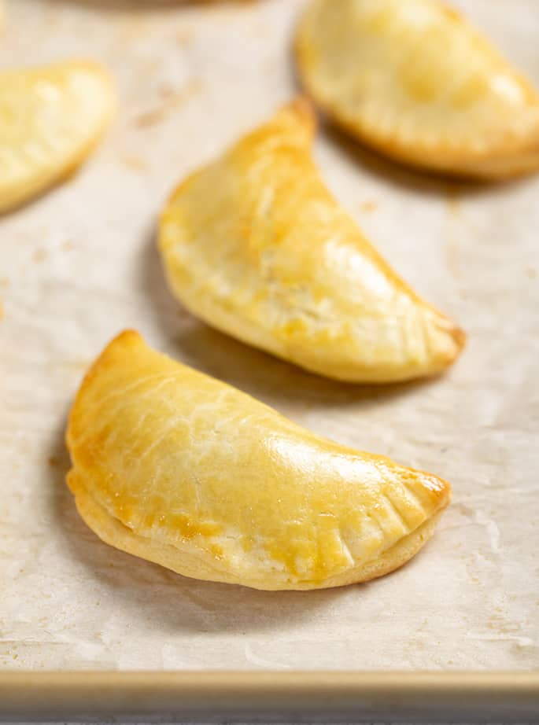

Gluten Free Jamon y Queso Empanadas

Empanadas are one of my favorite Latin American dishes. Specifically
Jamon y Queso. It is a type of baked (or fried) turnover, made by folding
dough around a savory or sweet filling. Fillings can include meats like beef,
chicken, pork, cheese, vegetables, or even fruit if you are like that.
Empanadas are popular in Spain, Latin America, Portugal, the Philippines, and
other regions with each area offering its own unique variations and flavors.
Empanadas can range in various sizes from large pies sliced into portions to more
common individual, hand-held pastries found today.
For this specific recipe, it will be gluten free, yet still preserve that classic
flavor.
Ingredients
For the Gluten-Free Dough:
- 3 cups (420g (hah, nice one)) gluten-free all-purpose flour (Almond flour should work as well)
- 1 1/2 teaspoons kosher salt
- 2 tablespoons of granulated sugar
- 2 eggs
- 1/4 cup milk
- 2 teaspoons apple cider vinegar
- 1/3 cup chilled dry white wine
For the Filling:
- 1 to 1 1/2 cups diced cooked ham
- 1 1/2 to 2 cups shredded cheese
- Optional: 2-3 tablespoons cream cheese of queso for the creaminess
Intructions
1. Make the Dough:
- In a large bowl, whisk together the gf flour, salt and sugar.
- Add the cold, cubbed butter. Using a pastry cutter or your fingertips, work the butter into the flour until the mixture resembles coarse crumbs.
- In a separate bowl, whisk together the eggs, milk, vinegar, and wine (or water).
- Add the wet mixture to the dry ingredients and mix until a dough forms. If the dough is too dry, add a tablespoon of cold water at a time until it comes together.
- Shape the dough into a disc, wrap in plastic, and chill for at least 30 minutes.
2. Prepare the Filling
- In a bowl, combine diced ham and shreded cheese. Add cream cheese or queso if using for extra richness.
3. Assemble the Empanadas!!
- Preheat oven to 375°F (190°C). Line a baking sheet with parchment paper.
- On a lightly floured surface (use gluten-free flour), roll out the dough to about ⅛-inch thick
- Cut out circles (4-5 inches in diameter) using a round cutter or a bowl.
- Place a heaping tablespoon of ham and cheese filling in the center of each circle.
- Lightly brush the edges with water. Fold the dough over to form a half-moon shape and press the edges to seal. Crimp with a fork or use a traditional repulgue technique.
- Place empanadas on the baking sheet. Brush tops with egg wash.
Bake for 15 to 20 minutes until golden brown and crisp. Let cool slightly before serving.
Home